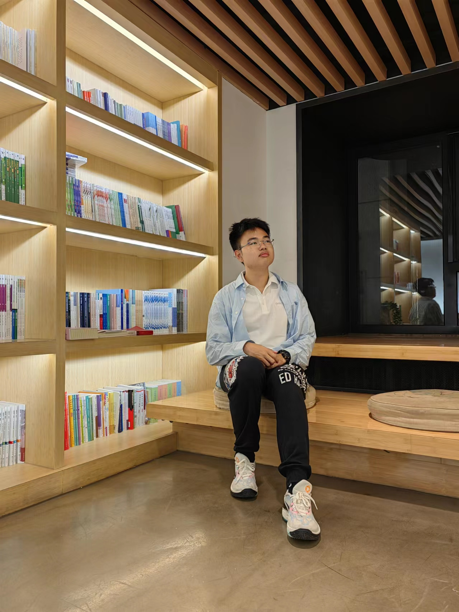

2023- 北大信科 · 智能科学与技术
2020-2023 东北师大附中
身边的榜样 | 朋辈宣讲
信科小白的大学进化论
About Me
Yu (Calvin) Cao
北京大学信息科学技术学院智能科学与技术专业大四本科生，目前研究方向为计算机视觉。

2023- 北大信科 · 智能科学与技术
2020-2023 东北师大附中
STRUCT Group · 计算机视觉 / 图像压缩
国家奖学金 / 北京大学校三好学生 / 比亚迪奖学金
ICME 2026；专利与标准提案参与
高中
习惯了稳定、顺利、靠前。
大学
突然发现：起点、节奏、评价体系都变了。
大学第一课，其实是重新认识自己。
一位学姐给我的提醒
不是躺平，也不是放弃；而是在很多“都想要”里，把有限的时间、精力和情绪，留给真正重要的方向。
01
兴趣不一定要消失，但有些喜欢可以从“主线”变成“陪伴”。
音乐曾经很重要，但刚进大学时，我更需要把主线留给专业基础和适应期。
02
可以参考别人，但不要用别人的节奏惩罚自己。
不要拿别人的第十章，否定自己的第一页。
03
一个建议正确，不代表它此刻适合我。
听建议，但也要从自己的基础、承受能力和阶段目标出发。
04
大学不是提前画好的地铁线路图，更像一边走一边校准的导航。
走弯路不等于失败，它常常是在收集关于自己的信息。
你看到的标签，不是一开始就拥有的，而是在不断选择之后慢慢形成的。
送给刚开始大学生活的你
做减法，不是变少，而是变清楚。
做选择，不是放弃可能性，而是把自己真正想成为的样子，一点一点留下来。